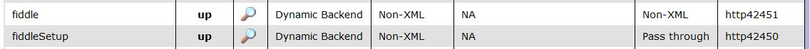
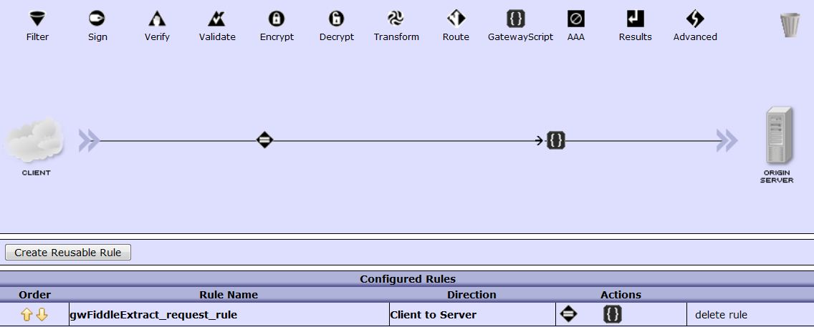
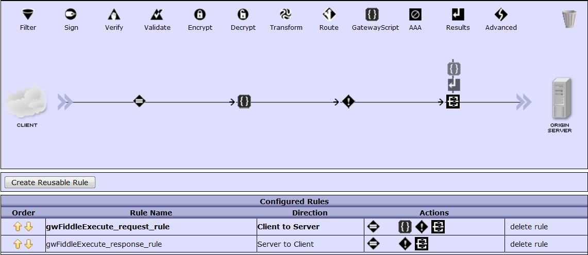

The DataPower configuration comprises of two Multi-Protocol Gateways, fiddleSetup and fiddle. fiddleSetup parses the incoming multipart message containing the request data, script to execute and user provided headers. fiddle is invoked by fiddleSetup using the urlopen API and passes the request using either GET, PUT, POST, or DELETE.
The following picture illustrates the request path configuration. The match action matches on /fiddle and execute a single request rule containing a single GatewayScript action reading from INPUT and writing directly to the OUTPUT context. This script invokes skipBackside to immediately respond to the client.
The second MPGW processing policy is more complex and involves conditional actions to select whether to run the user provided script on the request or response path. The GatewayScript action dereferences the relevant HTTP headers to identify the script name, backend server destination, and request vs response. On-Error continue action instructions the policy to continue without executing an Error Rule.
The first GatewayScript is used to parse a multipart message, extract out the request message (if any), user provided script to execute and any custom headers specified on the Request tab.
var hm = require ('header-metadata'),
sm = require ('service-metadata'),
url = require ('urlopen'),
fs = require ('fs'),
// Sample Headers
//
// X-GS-Fiddle-Method: POST
// X-GS-Fiddle-Rule: request
// X-GS-Fiddle-Request-URI: /cgi-bin/echo.cgi
// X-GS-Fiddle-Backside: http://testserver1.dp.swg.usma.ibm.com
// X-GS-Fiddle-Skip-Backside: false
// X-GS-Fiddle-Script-Loc: temporary://tmp/temp_333
//
// Skip the backside, request is sent using urlopen
//
sm.mpgw.skipBackside = true;
//
// Extract each part of the incoming multipart message
//
var boundary = undefined;
var ct = hm.current.get ('content-type');
if (ct) boundary = ct.substr(ct.indexOf('boundary=')+9);
session.input.readAsBuffer (function (err, buf) {
if (err) throw err;
var sbuffer = buf.toString();
var parts = sbuffer.split ('--'+boundary);
var mpgw_data = undefined,
mpgw_headers = undefined,
mpgw_script_loc = undefined;
for (var idx = 1; idx < parts.length-1; idx++) {
var part = parts[idx].trim(),
offset = part.indexOf('\r\n\r\n'),
header = part.substring (0, offset),
body = part.substring (offset+4);
if (/script/.test(header)) {
mpgw_script_loc = fs.temporary(),
fs.write (mpgw_script_loc, body);
}
if (/headers/.test(header)) {
mpgw_headers = JSON.parse (body);
}
if (/request/.test(header)) {
mpgw_data = body;
}
}
sendRequest (mpgw_data, mpgw_headers, mpgw_script_loc);
});
//
// Send the request to the second MPGW. Using two MPGW to provide
// a cleaner and more realistic execution for the user provided script.
// For example: session.INPUT contains just the request data
//
function sendRequest (mpgw_data, mpgw_headers, mpgw_script_loc) {
var mpgw_uri = mpgw_headers['X-GS-Fiddle-Request-URI'],
mpgw_method = mpgw_headers['X-GS-Fiddle-Method'],
mpgw_target = 'http://localhost:42451' + mpgw_uri;
mpgw_headers['X-GS-Fiddle-Script-Loc'] = mpgw_script_loc;
var options = {
target: mpgw_target,
method: mpgw_method,
headers: mpgw_headers,
data: mpgw_data
};
url.open (options, function (err, res) {
fs.unlink (mpgw_script_loc);
if (err) throw err;
hm.response.statusCode = res.statusCode;
hm.response.headers = res.headers;
res.readAsBuffer (function (err, buf) {
if (err) throw err;
if (buf) session.output.write (buf);
});
});
};
The second GatewayScript is used in the second MPGW to setup a context and context variable to drive two conditional actions which determine if the script is executed on the request or response path and obviously which script to execute.
var hm = require ('header-metadata'),
sm = require ('service-metadata'),
fs = require ('fs');
// Sample Headers
//
// X-GS-Fiddle-Method: POST
// X-GS-Fiddle-Rule: request
// X-GS-Fiddle-Request-URI: /cgi-bin/echo.cgi
// X-GS-Fiddle-Backside: http://testserver1.dp.swg.usma.ibm.com
// X-GS-Fiddle-Skip-Backside: false
// X-GS-Fiddle-Script-Loc: temporary://tmp/temp_333
var mpgw_uri = hm.current.get('X-GS-Fiddle-Request-URI'),
mpgw_rule = hm.current.get('X-GS-Fiddle-Rule'),
mpgw_backside = hm.current.get('X-GS-Fiddle-Backside'),
mpgw_script_loc = hm.current.get('X-GS-Fiddle-Script-Loc'),
mpgw_skip_backside = hm.current.get('X-GS-Fiddle-Skip-Backside');
//
// Set the transaction ID in the response headers. This is used
// later to grab the relevant transaction logs.
//
hm.response.set ('X-GS-Fiddle-DP-TXID', sm.transactionId);
//
// Skip backside or route to the target backend
//
if (mpgw_skip_backside === 'true') sm.mpgw.skipBackside = true;
else sm.routingUrl = mpgw_backside + mpgw_uri;
//
// Create the Processing Policy content "fiddle" to pass the location
// of the script file written by the previous mpgw
//
var ctx = session.createContext ('fiddle');
ctx.setVar("script", mpgw_script_loc);
ctx.write('<'+mpgw_rule+'/>');
//
// Strip all the X-GS-Fiddle-* headers
//
var headers = hm.current.headers;
for (var header in headers) {
if(header.match (/^X-GS-Fiddle/)) {
hm.current.remove(header);
}
}